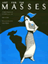

|

|
Doing
Comparable Worth
Gender, Class, and Pay Equity
Acker,
Joan
Jessie Bernard Prize of the American Sociological Association
for Life Achievement |
|
Process
of Occupational Sex-Typing
The Feminization of Clerical Labor in Great Britain, 1870-1936
Cohn,
Samuel
Jessie Bernard Book Award, American Sociological Association |

|
Conspicuous
Production
Automobiles and Elites in Detroit, 1899-1933
Davis,
Donald Finlay
Wallace K. Ferguson Prize, the Canadian Historical Association |

|
In
Transit
The Transport Workers Union in New York City, 1933-1966
Freeman,
Joshua B.
Co-winner of the Taft Book Award |

|
Rethinking
Rental Housing
Gilderbloom,
John I. and Richard P. Appelbaum, foreword by Joe R. Feagin
Robert E. Park Award, American Sociological Association |

|
A
Life in the Struggle
Ivory Perry and the Culture of Opposition
Lipsitz,
George
Eugene Kayden Prize for Best University Press Book
Anisfield-Wolf Book Award in Race Relations |

|
Echoes
from the Holocaust
Philosophical Reflections on a Dark Time
edited
by Rosenberg, Alan and Gerald E. Myers
Association of American University Presses Book Jacket Award |

|
Technological
Change and Co-Determination in Sweden
Sandberg,
�ke with Gunnar Broms Arne Grip Lars Sundstrom Jesper Steen
and Peter Ullmark, foreword by Andrew Martin
Abel Wolman Award, Public Works Historical Society |

|
Art
for The Masses
A Radical Magazine and Its Graphics, 1911-1917
Zurier,
Rebecca, introduction by Leslie Fishbein
Association of American University Presses Book Jacket and
Illustration Award |
|